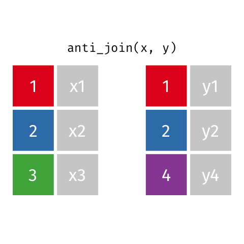
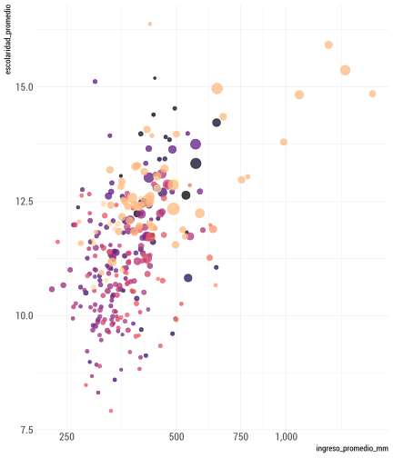
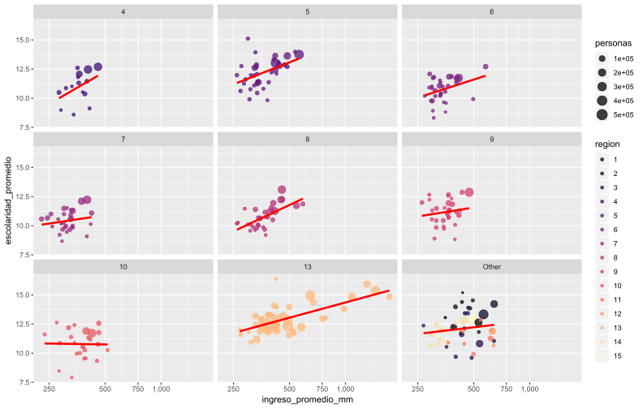
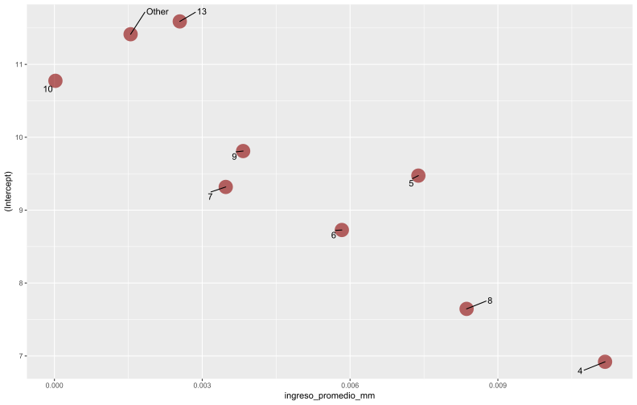
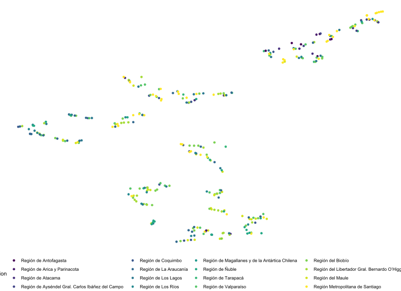
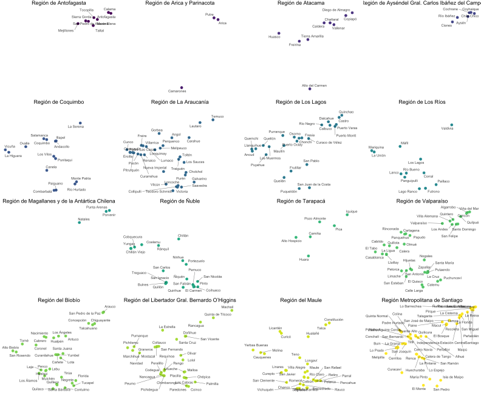

Introducción al Uso de R para Análisis Estadístico
¿cómo estamos?
¿Por qué R?
- Lenguaje orientado a los datos (*)
- Flexibilidad. Lenguaje de interfaces.
- +11.000 paquetes
- Comunidad
Antes de partir
- Presentación http://jkunst.com/intro-r-workshop/
- Código https://github.com/jbkunst/intro-r-workshop
- Asignación:
var <- 5significa que la variablevarcontiente el valor5
- Pipe:
var %>% f()que a la variablevarle aplico la funciónf. Leer como luego - De la misma forma:
var %>% f() %>% g()avarle aplicof, luegog
Antes de partir
- Tabla, Datos tabulados o data frame es un conjunto de valores cada uno asociado a una variable y una observación

En general cualquier análsis(*)

Importar

Con R podemos acceder a información desde distintas fuentes:
- Archivos de texto plano: txt, csv, tsv
- Archivos MS excel, SPSS, SAS
- Base de Datos: MySQL, SQLServer, PostgreSQL
- APIs, sitios webs
library(tidyverse) # combinacion de paquetes para importar + transformar + visualizar
comunas <- read_csv("data/codigos_comunales.csv")
comunas## # A tibble: 347 x 2
## CODIGO COMUNA
## <int> <chr>
## 1 15101 Arica
## 2 15102 Camarones
## 3 15201 Putre
## 4 15202 General Lagos
## 5 1101 Iquique
## 6 1402 Camiña
## 7 1403 Colchane
## 8 1404 Huara
## 9 1405 Pica
## 10 1401 Pozo Almonte
## # ... with 337 more rowslibrary(haven) # SPSS SAS STATA
casen <- read_sav("data/casen/Casen 2017.sav")
casen## # A tibble: 216,439 x 803
## folio o id_vivienda hogar region provincia comuna zona expr
## <dbl> <dbl> <dbl> <dbl> <dbl+> <dbl+lbl> <dbl+> <dbl> <dbl>
## 1 1.10e11 1 1101100202 1 1 11 1101 1 39
## 2 1.10e11 1 1101100203 1 1 11 1101 1 39
## 3 1.10e11 1 1101100204 1 1 11 1101 1 39
## 4 1.10e11 2 1101100204 1 1 11 1101 1 39
## 5 1.10e11 1 1101100205 1 1 11 1101 1 39
## 6 1.10e11 2 1101100205 1 1 11 1101 1 39
## 7 1.10e11 3 1101100205 1 1 11 1101 1 39
## 8 1.10e11 1 1101100206 1 1 11 1101 1 39
## 9 1.10e11 2 1101100206 1 1 11 1101 1 39
## 10 1.10e11 1 1101100209 1 1 11 1101 1 39
## # ... with 216,429 more rows, and 794 more variables: expc <dbl>,
## # expr_div <dbl>, varstrat <dbl>, varunit <dbl>, fecha_dia <dbl>,
## # fecha_mes <dbl>, fecha_año <dbl>, tot_hog <dbl>, tot_per <dbl>,
## # tot_par <dbl>, tot_nuc <dbl>, pres <dbl+lbl>, marca <chr>,
## # pco1 <dbl+lbl>, sexo <dbl+lbl>, edad <dbl>, h4m <dbl+lbl>,
## # h4a <dbl+lbl>, ecivil <dbl+lbl>, h6l <dbl>, h6h <dbl>,
## # pareja <dbl+lbl>, nucleo <dbl>, pco2 <dbl+lbl>, h9a <dbl+lbl>,
## # h9a_esp <chr>, h9 <dbl+lbl>, h10a <dbl+lbl>, h10b <dbl+lbl>,
## # h10c <dbl+lbl>, h10d <dbl+lbl>, h10e <dbl+lbl>, h10f <dbl+lbl>,
## # e1 <dbl+lbl>, e2 <dbl+lbl>, e3 <dbl+lbl>, e4 <dbl+lbl>, e4_esp <chr>,
## # e5a <dbl+lbl>, e5a_esp <chr>, e5b <dbl+lbl>, e6a <dbl+lbl>,
## # e6b <dbl+lbl>, e7 <chr>, e7_subarea <dbl+lbl>, e7_cod_area <dbl+lbl>,
## # e8 <dbl+lbl>, e9nom <chr>, e9dir <chr>, e9com <chr>,
## # e9com_c_cod <dbl+lbl>, e9com_p_cod <dbl+lbl>, e9rbd <dbl+lbl>,
## # e9rbd_sup <dbl+lbl>, e9depen <dbl+lbl>, e9dv <dbl>, e9te <dbl+lbl>,
## # e9sup_g <dbl+lbl>, e10 <dbl+lbl>, e11 <dbl+lbl>, e12a <dbl+lbl>,
## # e12b <dbl+lbl>, e12c <dbl+lbl>, e12d <dbl+lbl>, e12e <dbl+lbl>,
## # e13a <dbl+lbl>, e13b1 <dbl+lbl>, e13b1_esp <chr>, e13b2 <dbl+lbl>,
## # e13b2_esp <chr>, e14pbu <dbl+lbl>, e14pbt <dbl+lbl>, e14pbd <dbl+lbl>,
## # e14pbm <dbl+lbl>, e14bu <dbl+lbl>, e14bt <dbl+lbl>, e14bd <dbl+lbl>,
## # e14bm <dbl+lbl>, e14bpc <dbl+lbl>, e14mu <dbl+lbl>, e14mt <dbl+lbl>,
## # e14md <dbl+lbl>, e14mm <dbl+lbl>, e15a <dbl+lbl>, e15b <dbl+lbl>,
## # e16 <dbl+lbl>, e17 <dbl+lbl>, e18a <dbl+lbl>, e18b <dbl+lbl>,
## # e19_1 <dbl+lbl>, e19_2 <dbl+lbl>, e0 <dbl+lbl>, o1 <dbl+lbl>,
## # o2 <dbl+lbl>, o3 <dbl+lbl>, o4 <dbl+lbl>, o5 <dbl+lbl>, o6 <dbl+lbl>,
## # o7r1 <dbl+lbl>, o7r2 <dbl+lbl>, ...library(DBI) # Interfaz para bases de datos
library(RMySQL) # Driver para MySQL
con <- dbConnect(
drv = MySQL(),
dbname = "censo2017",
host = "142.93.20.188",
port = 3306,
user = "test",
password = "HFW9KYZBnEYr!"
)
dbListTables(con)## [1] "hogar" "idgeo" "personas" "vivienda"personas <- tbl(con,"personas")
personas## # Source: table<personas> [?? x 42]
## # Database: mysql 5.7.23-0ubuntu0.16.04.1 [test@142.93.20.188:/censo2017]
## REGION PROVINCIA COMUNA DC AREA ZC_LOC ID_ZONA_LOC NVIV NHOGAR
## <int> <int> <int> <int> <int> <int> <int> <int> <int>
## 1 15 152 15202 1 2 6 13225 1 1
## 2 15 152 15202 1 2 6 13225 3 1
## 3 15 152 15202 1 2 6 13225 3 1
## 4 15 152 15202 1 2 6 13225 3 1
## 5 15 152 15202 1 2 6 13225 3 1
## 6 15 152 15202 1 2 6 13225 9 1
## 7 15 152 15202 1 2 6 13225 9 1
## 8 15 152 15202 1 2 6 13225 9 1
## 9 15 152 15202 1 2 6 13225 9 1
## 10 15 152 15202 1 2 6 13225 10 1
## # ... with more rows, and 33 more variables: PERSONAN <int>, P07 <int>,
## # P08 <int>, P09 <int>, P10 <int>, P10COMUNA <int>, P10PAIS <int>,
## # P11 <int>, P11COMUNA <int>, P11PAIS <int>, P12 <int>, P12COMUNA <int>,
## # P12PAIS <int>, P12A_LLEGADA <int>, P12A_TRAMO <int>, P13 <int>,
## # P14 <int>, P15 <int>, P15A <int>, P16 <int>, P16A <int>,
## # P16A_OTRO <int>, P17 <int>, P18 <chr>, P19 <int>, P20 <int>,
## # P21M <int>, P21A <int>, P10PAIS_GRUPO <int>, P11PAIS_GRUPO <int>,
## # P12PAIS_GRUPO <int>, ESCOLARIDAD <int>, P16A_GRUPO <int>Transformar



casen_comuna <- casen %>%
mutate(comuna = as.numeric(comuna)) %>%
group_by(comuna) %>%
summarise(ingreso_promedio_mm = mean(y1, na.rm = TRUE)/1000)
casen_comuna## # A tibble: 324 x 2
## comuna ingreso_promedio_mm
## <dbl> <dbl>
## 1 1101 531.
## 2 1107 390.
## 3 1401 430.
## 4 1402 436.
## 5 1404 352.
## 6 1405 432.
## 7 2101 565.
## 8 2102 449.
## 9 2103 467.
## 10 2104 478.
## # ... with 314 more rowspersonas_resumen <- personas %>%
group_by(region, comuna) %>%
summarise(personas = n(), escolaridad_promedio = mean(ESCOLARIDAD)) %>%
collect()
personas_resumen## # A tibble: 346 x 4
## # Groups: region [15]
## region comuna personas escolaridad_promedio
## <int> <int> <dbl> <dbl>
## 1 1 1101 191468 12.6
## 2 1 1107 108375 12.2
## 3 1 1401 15711 11.8
## 4 1 1402 1250 15.2
## 5 1 1403 1728 15.9
## 6 1 1404 2730 13.1
## 7 1 1405 9296 14.4
## 8 2 2101 361873 13.3
## 9 2 2102 13467 13.4
## 10 2 2103 10186 13.9
## # ... with 336 more rowsdata <- comunas %>%
inner_join(personas_resumen, by = c("CODIGO" = "comuna")) %>%
inner_join(casen_comuna, by = c("CODIGO" = "comuna"))
data## # A tibble: 303 x 6
## CODIGO COMUNA region personas escolaridad_promed~ ingreso_promedio~
## <dbl> <chr> <int> <dbl> <dbl> <dbl>
## 1 15101 Arica 15 221364 12.9 494.
## 2 15102 Camarones 15 1255 11.4 322.
## 3 15201 Putre 15 2765 12.1 495.
## 4 1101 Iquique 1 191468 12.6 531.
## 5 1402 Camiña 1 1250 15.2 436.
## 6 1404 Huara 1 2730 13.1 352.
## 7 1405 Pica 1 9296 14.4 432.
## 8 1401 Pozo Almo~ 1 15711 11.8 430.
## 9 1107 Alto Hosp~ 1 108375 12.2 390.
## 10 2101 Antofagas~ 2 361873 13.3 565.
## # ... with 293 more rowsdata <- data %>%
mutate(
region = factor(region),
region2 = fct_lump(region, n = 8)
)
data## # A tibble: 303 x 7
## CODIGO COMUNA region personas escolaridad_pro~ ingreso_promedi~ region2
## <dbl> <chr> <fct> <dbl> <dbl> <dbl> <fct>
## 1 15101 Arica 15 221364 12.9 494. Other
## 2 15102 Camar~ 15 1255 11.4 322. Other
## 3 15201 Putre 15 2765 12.1 495. Other
## 4 1101 Iquiq~ 1 191468 12.6 531. Other
## 5 1402 Camiña 1 1250 15.2 436. Other
## 6 1404 Huara 1 2730 13.1 352. Other
## 7 1405 Pica 1 9296 14.4 432. Other
## 8 1401 Pozo ~ 1 15711 11.8 430. Other
## 9 1107 Alto ~ 1 108375 12.2 390. Other
## 10 2101 Antof~ 2 361873 13.3 565. Other
## # ... with 293 more rowsVisualizar

Visualización en R
- Una caraterística principal
- Paquete
ggplot2. Muy poderoso (entre otros) - Existen librerías interactivas
Graficar ingreso promedio y escolaridad promedio por comuna
p <- ggplot(data) +
geom_point(aes(x = ingreso_promedio_mm, y = escolaridad_promedio,
label = COMUNA))Agregamos más información
p <- ggplot(data) +
geom_point(aes(x = ingreso_promedio_mm, y = escolaridad_promedio,
label = COMUNA, color = region, size= personas))Detalles
p <- ggplot(data) +
geom_point(aes(x = ingreso_promedio_mm, y = escolaridad_promedio,
label = COMUNA, color = region, size= personas),
alpha = 0.75) +
scale_color_viridis_d(option = "magma") +
scale_x_continuous(trans = "log", labels = scales::comma,
breaks = seq(0, 1e3, by = 250))
Aquí parte la magia
p <- ggplot(data) +
geom_point(aes(x = ingreso_promedio_mm, y = escolaridad_promedio,
label = COMUNA, color = region, size= personas),
alpha = 0.75) +
scale_color_viridis_d(option = "magma") +
scale_x_continuous(trans = "log", labels = scales::comma,
breaks = seq(0, 1e3, by = 250)) +
facet_wrap(~region2)Aquí sigue la magia
p <- ggplot(data) +
geom_point(aes(x = ingreso_promedio_mm, y = escolaridad_promedio,
label = COMUNA, color = region, size= personas),
alpha = 0.75) +
scale_color_viridis_d(option = "magma") +
scale_x_continuous(trans = "log", labels = scales::comma,
breaks = seq(0, 1e3, by = 250)) +
facet_wrap(~region2) +
geom_smooth(aes(x = ingreso_promedio_mm, y = escolaridad_promedio),
method = "lm", se = FALSE, color = "red", size = 1.2)
Ejemplo 2
Importar + Transformar + Visualizar
library(sf) # datos espaciales
dgeo <- st_read("data/shapes/R13/Comuna.shp", layer = "Comuna", quiet = TRUE)
dgeo## Simple feature collection with 52 features and 6 fields
## geometry type: POLYGON
## dimension: XY
## bbox: xmin: -71.71523 ymin: -34.29093 xmax: -69.76999 ymax: -32.92194
## epsg (SRID): NA
## proj4string: +proj=longlat +ellps=GRS80 +no_defs
## First 10 features:
## REGION PROVINCIA COMUNA DESC_REGIO DESC_PROVI
## 1 13 131 13114 REGIÓN METROPOLITANA DE SANTIAGO SANTIAGO
## 2 13 131 13115 REGIÓN METROPOLITANA DE SANTIAGO SANTIAGO
## 3 13 131 13132 REGIÓN METROPOLITANA DE SANTIAGO SANTIAGO
## 4 13 131 13107 REGIÓN METROPOLITANA DE SANTIAGO SANTIAGO
## 5 13 131 13124 REGIÓN METROPOLITANA DE SANTIAGO SANTIAGO
## 6 13 131 13125 REGIÓN METROPOLITANA DE SANTIAGO SANTIAGO
## 7 13 131 13102 REGIÓN METROPOLITANA DE SANTIAGO SANTIAGO
## 8 13 131 13116 REGIÓN METROPOLITANA DE SANTIAGO SANTIAGO
## 9 13 131 13119 REGIÓN METROPOLITANA DE SANTIAGO SANTIAGO
## 10 13 131 13105 REGIÓN METROPOLITANA DE SANTIAGO SANTIAGO
## DESC_COMUN geometry
## 1 LAS CONDES POLYGON ((-70.47951 -33.364...
## 2 LO BARNECHEA POLYGON ((-70.32034 -33.105...
## 3 VITACURA POLYGON ((-70.57395 -33.354...
## 4 HUECHURABA POLYGON ((-70.66312 -33.329...
## 5 PUDAHUEL POLYGON ((-70.78914 -33.361...
## 6 QUILICURA POLYGON ((-70.69284 -33.323...
## 7 CERRILLOS POLYGON ((-70.71265 -33.481...
## 8 LO ESPEJO POLYGON ((-70.68305 -33.506...
## 9 MAIPÚ POLYGON ((-70.77557 -33.458...
## 10 EL BOSQUE POLYGON ((-70.65469 -33.548...Importar + Transformar + Visualizar
ggplot() +
geom_sf(data = dgeo)
Importar + Transformar + Visualizar
library(classInt) # ayuda a crear intervalos
niveles <- c("bajo", "medio", "alto")
dgeo <- dgeo %>%
left_join(data, by = c("COMUNA" = "CODIGO")) %>%
mutate(
escolaridad = classint(escolaridad_promedio, n = 3, style = "kmeans", labels = paste("esc",niveles)),
ingreso = classint(ingreso_promedio_mm, n = 3, style = "kmeans", labels = paste("ing",niveles))
)
glimpse(dgeo)## Observations: 52
## Variables: 15
## $ REGION <fct> 13, 13, 13, 13, 13, 13, 13, 13, 13, 13, 1...
## $ PROVINCIA <fct> 131, 131, 131, 131, 131, 131, 131, 131, 1...
## $ COMUNA <dbl> 13114, 13115, 13132, 13107, 13124, 13125,...
## $ DESC_REGIO <fct> REGIÓN METROPOLITANA DE SANTIAGO, REGIÓN ...
## $ DESC_PROVI <fct> SANTIAGO, SANTIAGO, SANTIAGO, SANTIAGO, S...
## $ DESC_COMUN <fct> LAS CONDES, LO BARNECHEA, VITACURA, HUECH...
## $ COMUNA.y <chr> "Las Condes", "Lo Barnechea", "Vitacura",...
## $ region <fct> 13, 13, 13, 13, 13, 13, 13, 13, 13, 13, 1...
## $ personas <dbl> 294838, 105833, 85384, 98671, 230293, 210...
## $ escolaridad_promedio <dbl> 15.3671, 12.9681, 14.8505, 12.9317, 12.38...
## $ ingreso_promedio_mm <dbl> 1451.1073, 753.7586, 1722.3136, 353.9551,...
## $ region2 <fct> 13, 13, 13, 13, 13, 13, 13, 13, 13, 13, 1...
## $ escolaridad <fct> esc alto, esc medio, esc alto, esc medio,...
## $ ingreso <fct> ing alto, ing medio, ing alto, ing bajo, ...
## $ geometry <POLYGON [°]> POLYGON ((-70.47951 -33.364..., ...Importar + Transformar + Visualizar
p2 <- ggplot() +
geom_sf(data = select(dgeo, COMUNA, geometry),
fill = "gray95", color = "gray80", size = 0.1) +
geom_sf(data = dgeo, aes(fill = escolaridad_promedio), color = "gray80", size = 0.1) +
scale_fill_viridis_c(option = "B") +
facet_grid(ingreso ~ escolaridad) +
theme_minimal() 
Modelar
Recordemos

Recordemos
data## # A tibble: 303 x 7
## CODIGO COMUNA region personas escolaridad_pro~ ingreso_promedi~ region2
## <dbl> <chr> <fct> <dbl> <dbl> <dbl> <fct>
## 1 15101 Arica 15 221364 12.9 494. Other
## 2 15102 Camar~ 15 1255 11.4 322. Other
## 3 15201 Putre 15 2765 12.1 495. Other
## 4 1101 Iquiq~ 1 191468 12.6 531. Other
## 5 1402 Camiña 1 1250 15.2 436. Other
## 6 1404 Huara 1 2730 13.1 352. Other
## 7 1405 Pica 1 9296 14.4 432. Other
## 8 1401 Pozo ~ 1 15711 11.8 430. Other
## 9 1107 Alto ~ 1 108375 12.2 390. Other
## 10 2101 Antof~ 2 361873 13.3 565. Other
## # ... with 293 more rowsSupongamos que quisieramos saber el efecto de la escolaridad por ingreso en comunas por cada region
datag <- data %>%
group_by(region2) %>%
nest()
datag## # A tibble: 9 x 2
## region2 data
## <fct> <list>
## 1 Other <tibble [47 x 6]>
## 2 4 <tibble [15 x 6]>
## 3 5 <tibble [36 x 6]>
## 4 6 <tibble [33 x 6]>
## 5 7 <tibble [30 x 6]>
## 6 8 <tibble [33 x 6]>
## 7 9 <tibble [32 x 6]>
## 8 10 <tibble [25 x 6]>
## 9 13 <tibble [52 x 6]>library(broom) # lleva modelos/test a data frames
datag <- datag %>%
mutate(
modelo = map(data, lm, formula = escolaridad_promedio ~ ingreso_promedio_mm),
parametros = map(modelo, tidy)
)
datag## # A tibble: 9 x 4
## region2 data modelo parametros
## <fct> <list> <list> <list>
## 1 Other <tibble [47 x 6]> <S3: lm> <tibble [2 x 5]>
## 2 4 <tibble [15 x 6]> <S3: lm> <tibble [2 x 5]>
## 3 5 <tibble [36 x 6]> <S3: lm> <tibble [2 x 5]>
## 4 6 <tibble [33 x 6]> <S3: lm> <tibble [2 x 5]>
## 5 7 <tibble [30 x 6]> <S3: lm> <tibble [2 x 5]>
## 6 8 <tibble [33 x 6]> <S3: lm> <tibble [2 x 5]>
## 7 9 <tibble [32 x 6]> <S3: lm> <tibble [2 x 5]>
## 8 10 <tibble [25 x 6]> <S3: lm> <tibble [2 x 5]>
## 9 13 <tibble [52 x 6]> <S3: lm> <tibble [2 x 5]>Volver al mundo normal
dmods <- datag %>%
select(region2, parametros) %>%
unnest()
dmods## # A tibble: 18 x 6
## region2 term estimate std.error statistic p.value
## <fct> <chr> <dbl> <dbl> <dbl> <dbl>
## 1 Other (Intercept) 11.4 0.838 13.6 1.44e-17
## 2 Other ingreso_promedio_mm 0.00155 0.00184 0.838 4.06e- 1
## 3 4 (Intercept) 6.92 2.52 2.74 1.68e- 2
## 4 4 ingreso_promedio_mm 0.0112 0.00693 1.61 1.31e- 1
## 5 5 (Intercept) 9.47 0.921 10.3 5.55e-12
## 6 5 ingreso_promedio_mm 0.00739 0.00244 3.02 4.71e- 3
## 7 6 (Intercept) 8.73 0.964 9.05 3.29e-10
## 8 6 ingreso_promedio_mm 0.00583 0.00274 2.13 4.14e- 2
## 9 7 (Intercept) 9.32 1.08 8.62 2.32e- 9
## 10 7 ingreso_promedio_mm 0.00348 0.00336 1.03 3.10e- 1
## 11 8 (Intercept) 7.65 0.671 11.4 1.28e-12
## 12 8 ingreso_promedio_mm 0.00836 0.00178 4.71 4.91e- 5
## 13 9 (Intercept) 9.81 1.50 6.56 2.94e- 7
## 14 9 ingreso_promedio_mm 0.00383 0.00415 0.923 3.64e- 1
## 15 10 (Intercept) 10.8 1.44 7.46 1.39e- 7
## 16 10 ingreso_promedio_mm 0.0000201 0.00379 0.00530 9.96e- 1
## 17 13 (Intercept) 11.6 0.254 45.6 2.01e-42
## 18 13 ingreso_promedio_mm 0.00254 0.000431 5.90 3.17e- 7Transformar
dmods <- dmods %>%
select(region2, term, estimate) %>%
spread(term, estimate)
dmods## # A tibble: 9 x 3
## region2 `(Intercept)` ingreso_promedio_mm
## <fct> <dbl> <dbl>
## 1 4 6.92 0.0112
## 2 5 9.47 0.00739
## 3 6 8.73 0.00583
## 4 7 9.32 0.00348
## 5 8 7.65 0.00836
## 6 9 9.81 0.00383
## 7 10 10.8 0.0000201
## 8 13 11.6 0.00254
## 9 Other 11.4 0.00155Visualizar
library(ggrepel) # extension ggplot2 que crea etiquetas que se repelen
p3 <- ggplot(dmods, aes(ingreso_promedio_mm, `(Intercept)`)) +
geom_point(size = 8, color = "darkred", alpha = 0.6, shape = 16) +
geom_text_repel(aes(label = region2), force = 20) +
scale_x_continuous(limits = c(0, NA)) escolaridad = α + β × ingreso_promedio_mm

Ejemplo 2: Reducción de Dimensionalidad
Recordemos la CASEN:
casen## # A tibble: 216,439 x 803
## folio o id_vivienda hogar region provincia comuna zona expr
## <dbl> <dbl> <dbl> <dbl> <dbl+> <dbl+lbl> <dbl+> <dbl> <dbl>
## 1 1.10e11 1 1101100202 1 1 11 1101 1 39
## 2 1.10e11 1 1101100203 1 1 11 1101 1 39
## 3 1.10e11 1 1101100204 1 1 11 1101 1 39
## 4 1.10e11 2 1101100204 1 1 11 1101 1 39
## 5 1.10e11 1 1101100205 1 1 11 1101 1 39
## 6 1.10e11 2 1101100205 1 1 11 1101 1 39
## 7 1.10e11 3 1101100205 1 1 11 1101 1 39
## 8 1.10e11 1 1101100206 1 1 11 1101 1 39
## 9 1.10e11 2 1101100206 1 1 11 1101 1 39
## 10 1.10e11 1 1101100209 1 1 11 1101 1 39
## # ... with 216,429 more rows, and 794 more variables: expc <dbl>,
## # expr_div <dbl>, varstrat <dbl>, varunit <dbl>, fecha_dia <dbl>,
## # fecha_mes <dbl>, fecha_año <dbl>, tot_hog <dbl>, tot_per <dbl>,
## # tot_par <dbl>, tot_nuc <dbl>, pres <dbl+lbl>, marca <chr>,
## # pco1 <dbl+lbl>, sexo <dbl+lbl>, edad <dbl>, h4m <dbl+lbl>,
## # h4a <dbl+lbl>, ecivil <dbl+lbl>, h6l <dbl>, h6h <dbl>,
## # pareja <dbl+lbl>, nucleo <dbl>, pco2 <dbl+lbl>, h9a <dbl+lbl>,
## # h9a_esp <chr>, h9 <dbl+lbl>, h10a <dbl+lbl>, h10b <dbl+lbl>,
## # h10c <dbl+lbl>, h10d <dbl+lbl>, h10e <dbl+lbl>, h10f <dbl+lbl>,
## # e1 <dbl+lbl>, e2 <dbl+lbl>, e3 <dbl+lbl>, e4 <dbl+lbl>, e4_esp <chr>,
## # e5a <dbl+lbl>, e5a_esp <chr>, e5b <dbl+lbl>, e6a <dbl+lbl>,
## # e6b <dbl+lbl>, e7 <chr>, e7_subarea <dbl+lbl>, e7_cod_area <dbl+lbl>,
## # e8 <dbl+lbl>, e9nom <chr>, e9dir <chr>, e9com <chr>,
## # e9com_c_cod <dbl+lbl>, e9com_p_cod <dbl+lbl>, e9rbd <dbl+lbl>,
## # e9rbd_sup <dbl+lbl>, e9depen <dbl+lbl>, e9dv <dbl>, e9te <dbl+lbl>,
## # e9sup_g <dbl+lbl>, e10 <dbl+lbl>, e11 <dbl+lbl>, e12a <dbl+lbl>,
## # e12b <dbl+lbl>, e12c <dbl+lbl>, e12d <dbl+lbl>, e12e <dbl+lbl>,
## # e13a <dbl+lbl>, e13b1 <dbl+lbl>, e13b1_esp <chr>, e13b2 <dbl+lbl>,
## # e13b2_esp <chr>, e14pbu <dbl+lbl>, e14pbt <dbl+lbl>, e14pbd <dbl+lbl>,
## # e14pbm <dbl+lbl>, e14bu <dbl+lbl>, e14bt <dbl+lbl>, e14bd <dbl+lbl>,
## # e14bm <dbl+lbl>, e14bpc <dbl+lbl>, e14mu <dbl+lbl>, e14mt <dbl+lbl>,
## # e14md <dbl+lbl>, e14mm <dbl+lbl>, e15a <dbl+lbl>, e15b <dbl+lbl>,
## # e16 <dbl+lbl>, e17 <dbl+lbl>, e18a <dbl+lbl>, e18b <dbl+lbl>,
## # e19_1 <dbl+lbl>, e19_2 <dbl+lbl>, e0 <dbl+lbl>, o1 <dbl+lbl>,
## # o2 <dbl+lbl>, o3 <dbl+lbl>, o4 <dbl+lbl>, o5 <dbl+lbl>, o6 <dbl+lbl>,
## # o7r1 <dbl+lbl>, o7r2 <dbl+lbl>, ...Consideremos las siguientes variables
vars## [1] "region" "comuna" "tot_hog" "tot_par"
## [5] "tot_nuc" "tot_per" "sexo" "edad"
## [9] "ecivil" "pareja" "e1" "o1"
## [13] "o2" "y1" "y3a" "y27a"
## [17] "y27b" "y27c" "y27d" "y27e"
## [21] "s4" "s5" "s12" "s13"
## [25] "r1a" "v1" "v2" "v8"
## [29] "v10" "v13" "v18" "v19"
## [33] "v23" "v26" "y0101" "y0301"
## [37] "educ" "depen" "hacinamiento"Y por dichas variables agrupar por comuna(*)
casen_c## # A tibble: 324 x 730
## region comuna tot_hog tot_par tot_nuc tot_per edad y1 s4 s5
## <chr> <chr> <dbl> <dbl> <dbl> <dbl> <dbl> <dbl> <dbl> <dbl>
## 1 Regió~ Iquiq~ 1.20 0.876 1.43 4.28 34.6 5.63e5 2.46 23.3
## 2 Regió~ Alto ~ 1.16 0.901 1.39 4.75 28.8 4.28e5 2.64 22.2
## 3 Regió~ Pozo ~ 1.08 0.824 1.26 4.11 34.4 4.41e5 3.06 21.7
## 4 Regió~ Camiña 1 0.829 1.22 3.95 36.6 4.36e5 3.7 23.2
## 5 Regió~ Huara 1.01 0.784 1.26 4.03 39.2 3.52e5 3.10 22.1
## 6 Regió~ Pica 1.12 0.689 1.13 3 44.7 4.66e5 2.71 23.9
## 7 Regió~ Antof~ 1.23 0.806 1.35 4.26 34.2 6.30e5 2.45 23.2
## 8 Regió~ Mejil~ 1.09 0.817 1.31 4.48 32.5 4.55e5 2.62 21.3
## 9 Regió~ Sierr~ 1.23 0.667 1.06 3.29 32.2 4.89e5 2.52 22.1
## 10 Regió~ Taltal 1 0.933 1.40 4.70 35.4 4.90e5 2.74 21.5
## # ... with 314 more rows, and 720 more variables: v8 <dbl>, y0101 <dbl>,
## # y0301 <dbl>, sexo_Mujer <dbl>, sexo_Otra <dbl>,
## # `ecivil_Casado(a)` <dbl>, ecivil_Otra <dbl>,
## # `ecivil_Soltero(a)` <dbl>, `pareja_No tiene pareja en el hogar` <dbl>,
## # pareja_Otra <dbl>, e1_Otra <dbl>, `e1_Sí, lee y escribe` <dbl>,
## # o1_No <dbl>, o1_Otra <dbl>, o1_Sí <dbl>, o2_NA <dbl>, o2_Otra <dbl>,
## # y3a_NA <dbl>, y3a_Otra <dbl>, y27a_No <dbl>, y27a_Otra <dbl>,
## # y27b_No <dbl>, y27b_Otra <dbl>, y27c_No <dbl>, y27c_Otra <dbl>,
## # y27c_Si <dbl>, y27d_No <dbl>, y27d_Otra <dbl>, y27e_No <dbl>,
## # y27e_Otra <dbl>, `s12_FF.AA. y de Orden` <dbl>, s12_ISAPRE <dbl>,
## # `s12_Ninguno (Particular)` <dbl>, `s12_No sabe` <dbl>, s12_Otra <dbl>,
## # `s12_Sistema Público FONASA Grupo A` <dbl>, `s12_Sistema Público
## # FONASA Grupo B` <dbl>, `s12_Sistema Público FONASA Grupo C` <dbl>,
## # `s12_Sistema Público FONASA Grupo D` <dbl>, `s12_Sistema Público
## # FONASA No sabe grupo` <dbl>, s13_5 <dbl>, s13_6 <dbl>, `s13_7. Muy
## # Bien` <dbl>, s13_Otra <dbl>, `r1a_Chilena (Exclusiva)` <dbl>,
## # r1a_Otra <dbl>, `v1_Casa aislada (no pareada)` <dbl>, v1_Otra <dbl>,
## # `v2_Albañilería (bloque de cemento, piedra o ladrillo)` <dbl>,
## # v2_Otra <dbl>, `v2_Tabique forrado por ambas caras (madera, acero,
## # lata u otro)` <dbl>, `v10_Está inscrito en el conservador de bienes
## # raíces a nombre de` <dbl>, v10_Otra <dbl>, v13_Otra <dbl>, `v13_Propia
## # pagada` <dbl>, v18_NA <dbl>, v18_Otra <dbl>, v19_0 <dbl>,
## # v19_10000 <dbl>, v19_1000001 <dbl>, v19_1000003 <dbl>,
## # v19_100001 <dbl>, v19_100002 <dbl>, v19_100003 <dbl>,
## # v19_100005 <dbl>, v19_100006 <dbl>, v19_100008 <dbl>,
## # v19_100009 <dbl>, v19_100030 <dbl>, v19_100060 <dbl>,
## # v19_100090 <dbl>, v19_1000900 <dbl>, v19_100300 <dbl>,
## # v19_100330 <dbl>, v19_100800 <dbl>, v19_100900 <dbl>,
## # v19_1013000 <dbl>, v19_103000 <dbl>, v19_103003 <dbl>,
## # v19_105000 <dbl>, v19_106000 <dbl>, v19_108000 <dbl>,
## # v19_1080000 <dbl>, v19_108500 <dbl>, v19_109000 <dbl>,
## # v19_11000 <dbl>, v19_110000 <dbl>, v19_1100000 <dbl>,
## # v19_111008 <dbl>, v19_112000 <dbl>, v19_114000 <dbl>,
## # v19_1140000 <dbl>, v19_115000 <dbl>, v19_1150000 <dbl>,
## # v19_115500 <dbl>, v19_1170000 <dbl>, v19_118000 <dbl>,
## # v19_119000 <dbl>, v19_12000 <dbl>, v19_120000 <dbl>, ...Resumiremos toda la información en 2 variables
library(smallvis)
umap_casen_c <- smallvis(casen_c, method = "umap", perplexity = 25, eta = 0.01, verbose = FALSE)head(umap_casen_c)## [,1] [,2]
## [1,] 13.753624 28.747560
## [2,] -1.725174 10.643639
## [3,] 5.424085 23.036725
## [4,] 2.593112 11.116620
## [5,] 2.035875 -4.237884
## [6,] 9.868047 19.990722Transformar
casen_umap <- casen_c %>%
select(region, comuna) %>%
bind_cols(as.data.frame(umap_casen_c))
casen_umap## # A tibble: 324 x 4
## region comuna V1 V2
## <chr> <chr> <dbl> <dbl>
## 1 Región de Tarapacá Iquique 13.8 28.7
## 2 Región de Tarapacá Alto Hospicio -1.73 10.6
## 3 Región de Tarapacá Pozo Almonte 5.42 23.0
## 4 Región de Tarapacá Camiña 2.59 11.1
## 5 Región de Tarapacá Huara 2.04 -4.24
## 6 Región de Tarapacá Pica 9.87 20.0
## 7 Región de Antofagasta Antofagasta 15.5 31.4
## 8 Región de Antofagasta Mejillones 5.59 23.1
## 9 Región de Antofagasta Sierra Gorda 7.90 25.3
## 10 Región de Antofagasta Taltal 10.2 21.6
## # ... with 314 more rowsVisualizar
p4 <- ggplot(casen_umap, aes(V1, V2, color = region, label = comuna)) +
geom_point() +
scale_color_viridis_d() +
theme_void() +
theme(legend.position = "bottom")
Iterar
p5 <- p4 +
geom_text_repel(size = 2, color = "black", alpha = 0.75, segment.colour = "black",
segment.alpha = 0.5, segment.size = 0.25) +
facet_wrap(~region) +
theme(legend.position = "none")
Comunicar
Comunicar no es solo
- Presentar un par de números
- Mostrar un gráfico
Es
- Atraer al receptor, y facilitarle la lectura
- Contar la historia, dar razones
- …
R poseee muchas otras formas de comunicar:
- Gráficos interactivos (htmlwidgets)
- Creación de documentos (words, pdf, html)
- Dashboards, aplicaciones webs
htmlwidgets
htmlwidgets
- Son paquetes que implementan alguna libreria
javascript - Abstrae del conocimiento de de javascript
- Si bien es R, cada paquete tienes sus propia forma de funcionar
library(plotly) # htmlwidgets de plotlyJS
ggplotly(p, height = 600) %>%
config(displayModeBar = FALSE)comuna_tipohogar <- tbl(con, "hogar") %>%
count(COMUNA, TIPO_HOGAR) %>%
collect(n = Inf) %>%
mutate(
TIPO_HOGAR = case_when(
TIPO_HOGAR == 1 ~ "unipersonal",
TIPO_HOGAR == 2 ~ "nuclear monoparental",
TIPO_HOGAR == 3 ~ "nuclear biparental sin hijos",
TIPO_HOGAR == 4 ~ "nuclear biparental con hijos",
TIPO_HOGAR == 5 ~ "compuesto",
TIPO_HOGAR == 6 ~ "extenso",
TIPO_HOGAR == 7 ~ "sin núcleo",
TRUE ~ "NA"
)
) %>%
rename(name = TIPO_HOGAR, y = n) %>%
nest() %>%
rename(ttdata = data) %>%
mutate(ttdata = map(ttdata, highcharter::list_parse))
data <- left_join(data, comuna_tipohogar, by = c("CODIGO" = "COMUNA"))
data## # A tibble: 303 x 8
## CODIGO COMUNA region personas escolaridad_pro~ ingreso_promedi~ region2
## <dbl> <chr> <fct> <dbl> <dbl> <dbl> <fct>
## 1 15101 Arica 15 221364 12.9 494. Other
## 2 15102 Camar~ 15 1255 11.4 322. Other
## 3 15201 Putre 15 2765 12.1 495. Other
## 4 1101 Iquiq~ 1 191468 12.6 531. Other
## 5 1402 Camiña 1 1250 15.2 436. Other
## 6 1404 Huara 1 2730 13.1 352. Other
## 7 1405 Pica 1 9296 14.4 432. Other
## 8 1401 Pozo ~ 1 15711 11.8 430. Other
## 9 1107 Alto ~ 1 108375 12.2 390. Other
## 10 2101 Antof~ 2 361873 13.3 565. Other
## # ... with 293 more rows, and 1 more variable: ttdata <list>library(highcharter) # htmlwidgets de highcharts
hc <- hchart(
data, type = "point",
hcaes(ingreso_promedio_mm, escolaridad_promedio, group = region2, size = personas),
minSize = 1, maxSize = 15
) %>%
hc_xAxis(
type = "logarithmic", crosshair = TRUE,
labels = list(format = "${value}")) %>%
hc_colors(hex_to_rgba(viridis::cividis(9))) %>%
hc_tooltip(
useHTML = TRUE,
pointFormatter = tooltip_chart(
accesor = "ttdata",
hc_opts = list(
chart = list(type = "pie"),
xAxis = list(type = "category"),
title = list(text = "point.COMUNA")
)
)
) %>%
hc_add_theme(hc_theme_smpl()) %>%
hc_size(height = 700)
hclibrary(leaflet) # htmlwidget de leafletJS
pal <- colorNumeric("viridis", NULL)
l <- leaflet(dgeo) %>%
addTiles() %>%
addPolygons(
stroke = TRUE, color = "#DADADA", weight = 1,
smoothFactor = 2, fillOpacity = 0.75,
fillColor = ~pal(escolaridad_promedio),
label = ~paste0(DESC_COMUN, ": ", escolaridad_promedio)
) %>%
addLegend(pal = pal, values = ~escolaridad_promedio, opacity = 1.0)
llibrary(mapdeck) # hmtlwidget Mapbox + Deck.gl
token <- "pk.eyJ1IjoiamJrdW5zdCIsImEiOiJjamt4OTRmZXMwNjhoM3FxamNya2pqNHZjIn0.2FkUN09oWHz0Jg07MzyKKA"
dgeo <- mutate(dgeo, personas_cientos = personas/100)
md <- mapdeck(token = token, height = 700,
zoom = 7, location = c(-70.65664, -33.45327),
style = 'mapbox://styles/mapbox/dark-v9', pitch = 45) %>%
add_polygon(
data = dgeo,
fill_colour = "escolaridad_promedio",
tooltip = "DESC_COMUN",
stroke_width = 0,
layer = "Comuna",
elevation = "personas_cientos"
)
mdRmarkdown
Rmarkdown
- markdown es una forma simplificada de escribir texto
- Rmarkdown es un markdown con pedazos (chunks) de código R
- Si bien es texto, se puede compilar a distintos formatos: pdf, html, word, ppt
---
title: "Prueba Rmarkdown"
output:
html_document:
toc: true
---
```{r setup, include=FALSE}
library(tidyverse)
library(knitr)
opts_chunk$set(echo = FALSE)
data <- readRDS("data/data.rds")
```
## R Markdown
Este es un documento markdown. Esta son comunas de la 15va region
```{r}
kable(data[1:10, c(2, 5, 6)])
```
## Otra sección
Al infinito y al más allá
```{r}
ggplot(data, aes(ingreso_promedio_mm, escolaridad_promedio)) + geom_point()
```Ir a ver
Shiny
Shiny
- Paquete que nos premite hace aplicaciones web
- Sí! Sin conocer html, css, javascript, requests, JSON
- No esté pensado para grandes aplicaciones, pero si para todo lo demás

library(shiny)
library(tidyverse)
library(sf)
library(ggrepel)
library(leaflet)
library(plotly)
data <- readRDS("data/data.rds")
pal <- colorNumeric("viridis", NULL)
ui <- fluidPage(
titlePanel("Mi primer Shiny!"),
selectInput("region", "Region", choices = unique(data$region)),
fluidRow(
column(6, plotlyOutput("plot")),
column(6, leafletOutput("map"))
)
)
server <- function(input, output) {
output$map <- renderLeaflet({
dgeo <- st_read(sprintf("data/shapes/R%s/Comuna.shp", str_pad(input$region, 2, pad = 0)),
layer = "Comuna", quiet = TRUE)
dgeo <- dgeo %>% mutate(COMUNA = as.numeric(as.character(COMUNA)))
dgeo <- left_join(dgeo, data, by = c("COMUNA" = "CODIGO"))
leaflet(dgeo) %>%
addTiles() %>%
addPolygons(
stroke = TRUE, color = "#DADADA", weight = 1,
smoothFactor = 1, fillOpacity = 0.75,
fillColor = ~pal(escolaridad_promedio),
label = ~paste0(DESC_COMUN, ": ", escolaridad_promedio)
) %>%
addLegend(pal = pal, values = ~escolaridad_promedio, opacity = 1.0)
})
output$plot <- renderPlotly({
p <- data %>%
filter(region == input$region) %>%
ggplot(aes(escolaridad_promedio, ingreso_promedio_mm,
color = escolaridad_promedio, size = personas, label = COMUNA)) +
geom_point()
config(ggplotly(p), displayModeBar = FALSE)
})
}
shinyApp(ui = ui, server = server)Ir a jugar
Introducción al Uso de R
jkunst.com
@jbkunst
@jbkunst
joshuakunst